Results
Cross-validated performance
Binary task: Deficient vs Adequate relative to each critical level. No synthetic augmentation.
73%Mean XGBoost accuracy
across N, P, K, Mg
across N, P, K, Mg
66–81%Accuracy range
by nutrient
by nutrient
+22 ppBest lift over majority
(Magnesium)
(Magnesium)
~120–135Original leaf spectra
per nutrient
per nutrient

Thresholds
Oil-palm critical levels
Labels are cut from lab leaf values (% dry matter). Adequate means value ≥ critical.
| Nutrient | Critical | Deficient / Adequate | XGBoost accuracy | Balanced accuracy | Majority baseline |
|---|---|---|---|---|---|
| Nitrogen | 2.50% | 93 / 35 | 66.4% | 54.6% | 72.7% |
| Phosphorus | 0.15% | 44 / 86 | 73.1% | 69.1% | 66.2% |
| Potassium | 1.00% | 114 / 21 | 80.7% | 59.5% | 84.4% |
| Magnesium | 0.25% | 59 / 59 | 72.0% | 72.0% | 50.0% |
Potassium’s raw accuracy is inflated by class imbalance; balanced accuracy (~60%) is the fairer read. Magnesium shows the clearest spectral signal (+22 percentage points over chance).
Diagnostics
Confusion matrices and mean spectra
Nitrogen · confusion
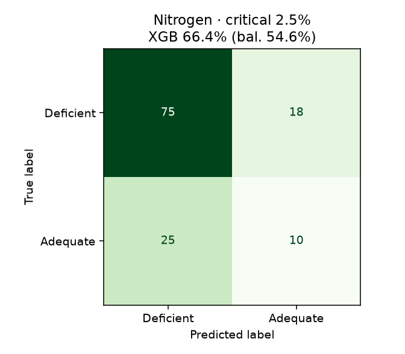
Nitrogen · mean spectra
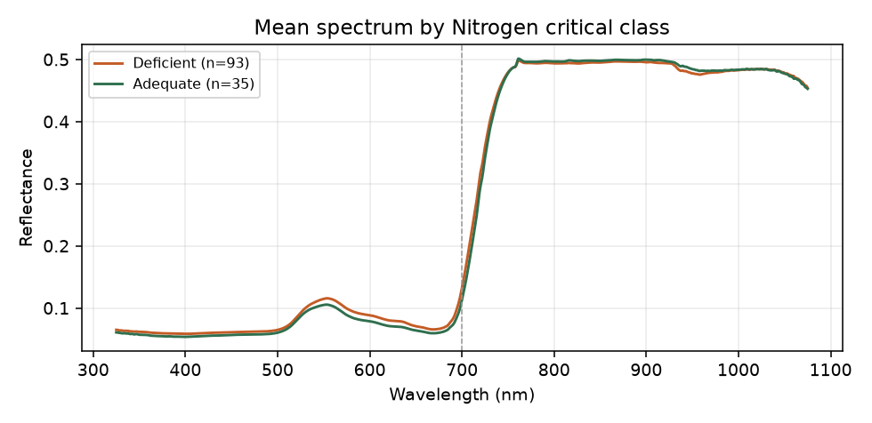
Phosphorus · confusion
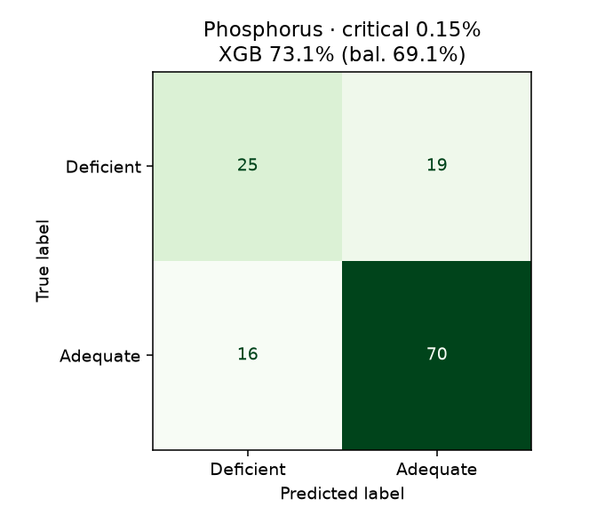
Phosphorus · mean spectra
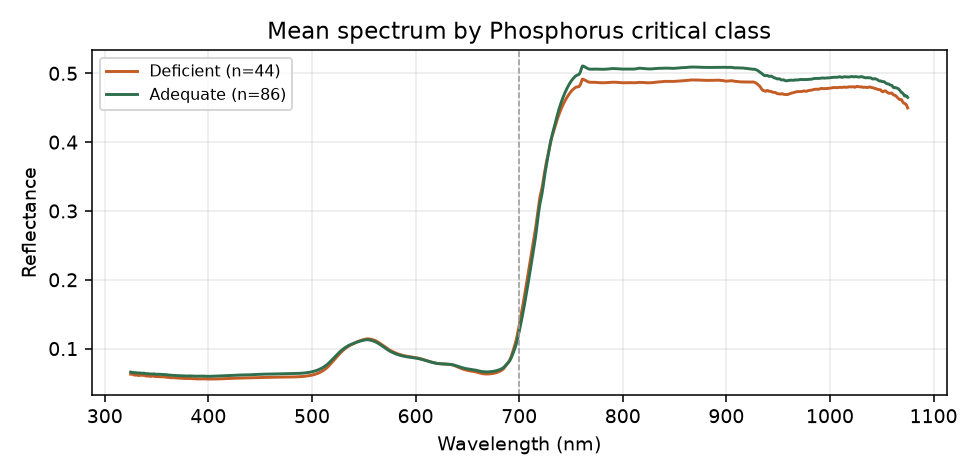
Potassium · confusion
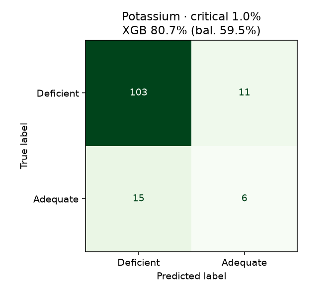
Potassium · mean spectra
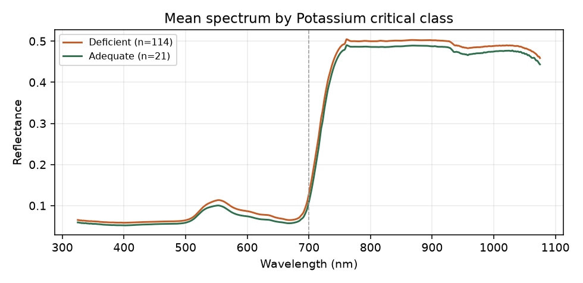
Magnesium · confusion
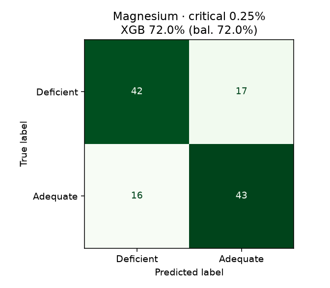
Magnesium · mean spectra
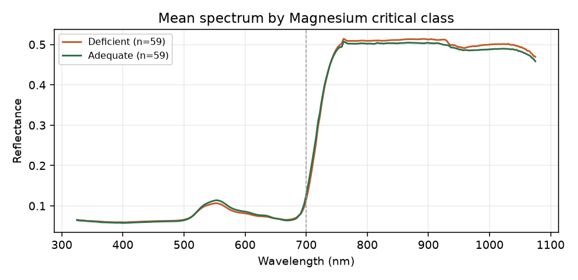
Regression
Continuous nutrient prediction
Same spectra into an XGBoost regressor. Dotted lines mark each critical threshold.
Nitrogen · R² 0.35
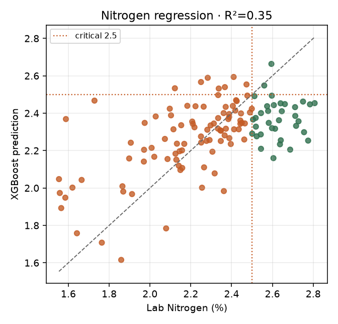
Phosphorus · R² 0.39
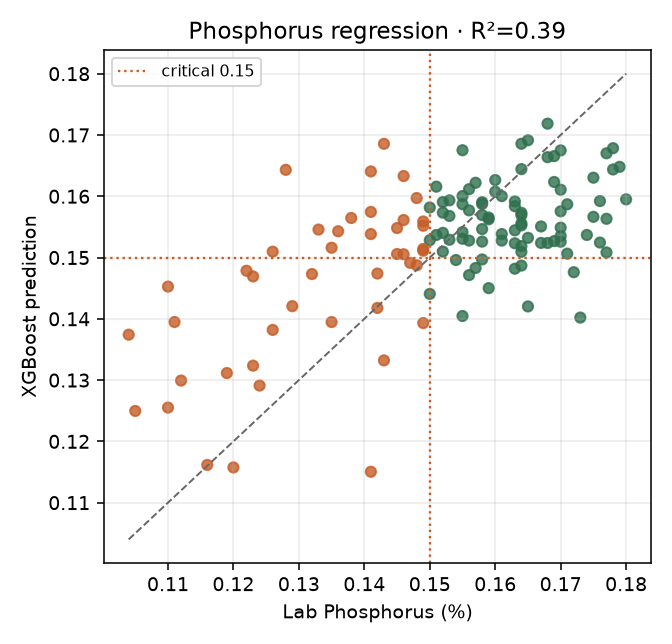
Potassium · R² 0.45
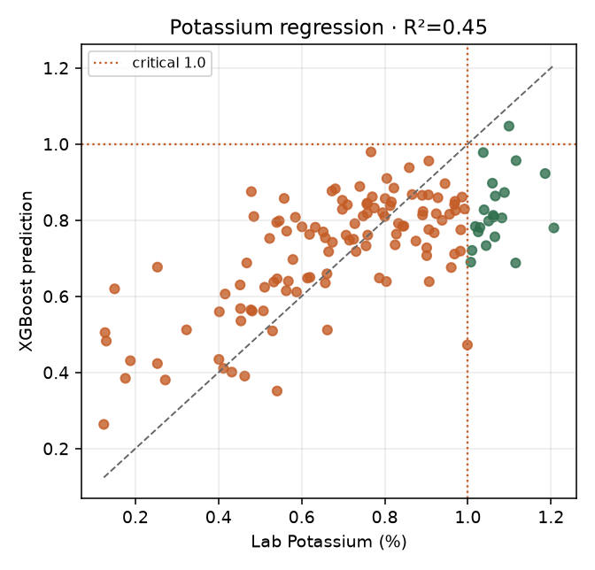
Magnesium · R² 0.42
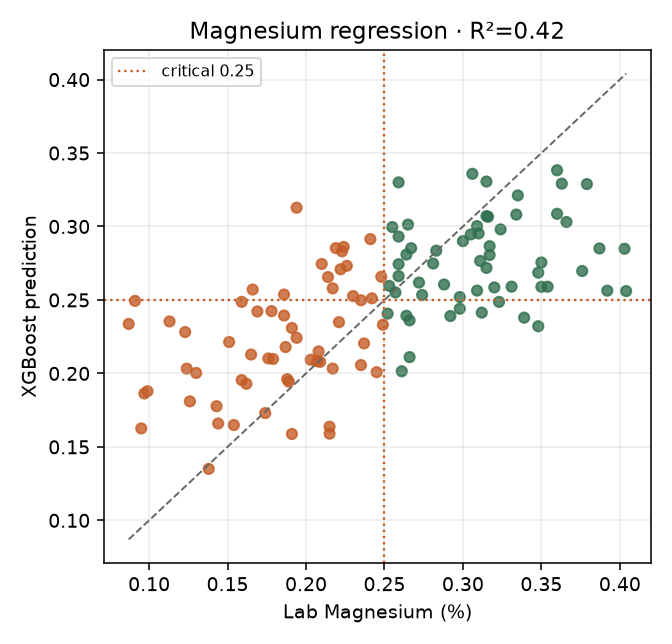
Method
How the status model is built
- Data. Leaf spectroradiometer readings for N, P, K, and Mg (about 118–135 samples each), 325–1075 nm.
- Labels. Binary status from critical thresholds: N 2.50%, P 0.15%, K 1.00%, Mg 0.25% dry matter.
- Features. SNV reflectance and SNV first derivative over the full spectrum and a NIR window (700–1075 nm).
- Model. PCA (99% variance, inside each fold) + XGBoost, with class-weight adjustment.
- Validation. Stratified K-fold on original samples only.
Sources
Data sources
- Leaf spectra and lab nutrients. Public spectroradiometer worksheets for Nitrogen, Phosphorus, Potassium, and Magnesium from oil-palm-nutrient-estimation (GitHub; advised by Dr. Apichon Witayangkurn). Wavelength range 325–1075 nm with paired leaf nutrient values.
- Related open materials. UAV vegetation-index leaf-nutrition set: palm-oil-leaf-nutrition-prediction (used for reference; the XGBoost scores on this page are from the spectroradiometer worksheets above).
- Status labels. Binary Deficient / Adequate cuts use frond-17 style oil-palm leaf critical levels (N 2.50%, P 0.15%, K 1.00%, Mg 0.25% dry matter).